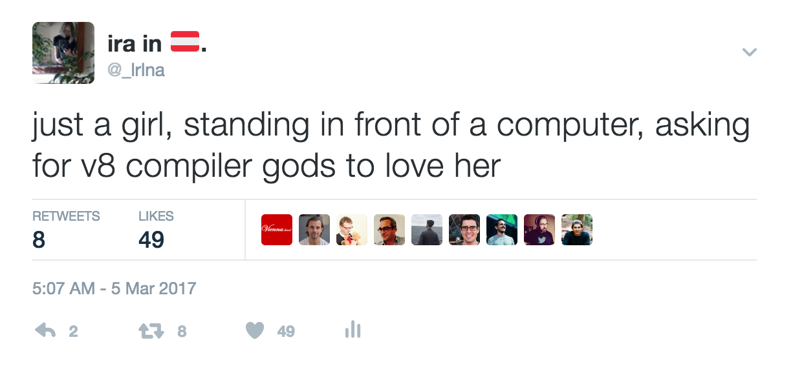
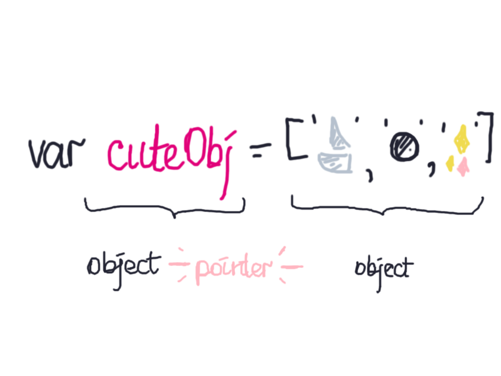
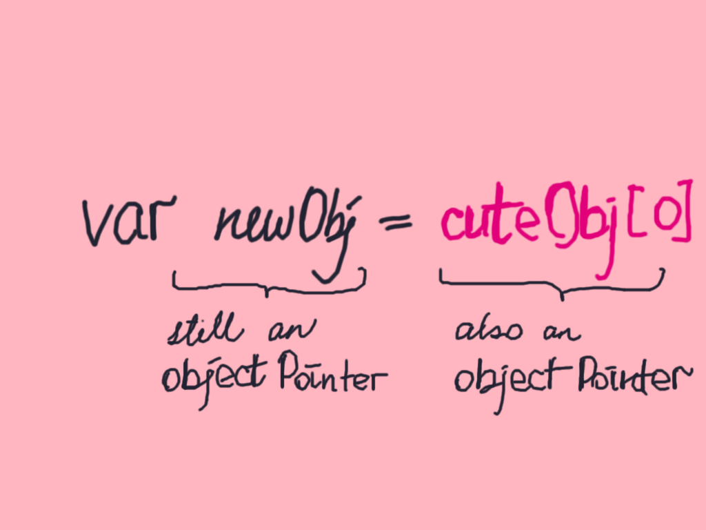

Garbage Collection in V8
I am Irina

Garbage collection in V8
o(*^▽^*)o
V8
compiles and executes your .js
V8
generational, stop-the-world garbage collector
So what's garbage collection?
Memory management
no interface to access memory in ECMAScript
memory management rights™ go to V8
typycal frame === 60 seconds
garbage collector determines whether objects are dead or alive
allocating memory is cheap + fast
until the heap is full
V8 uses generational garbage collection
objects don't mingle with younger generations
make for a cleaner sweep


Resources
Thanks for having me ✨ 😘